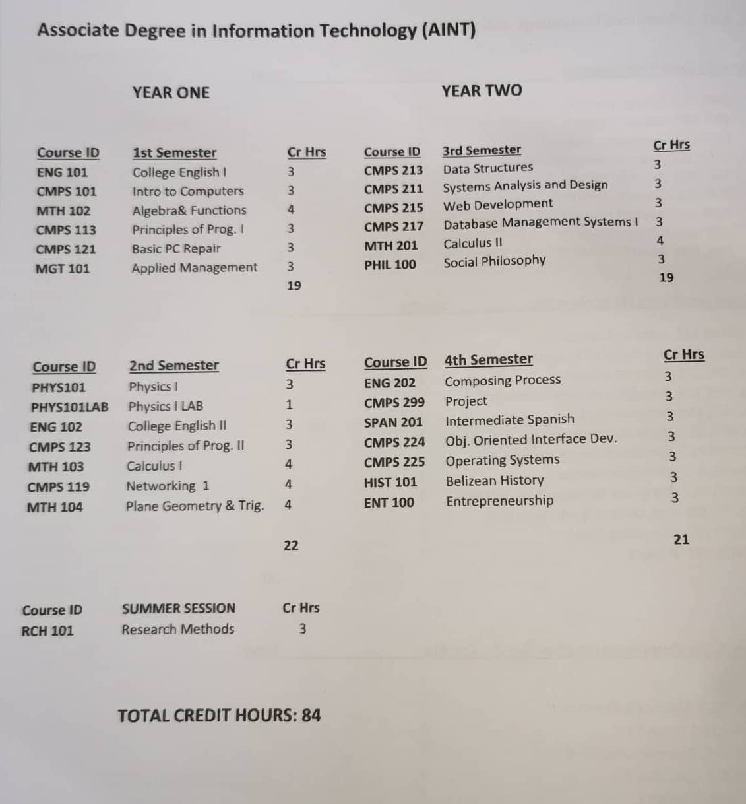

Classes in the IT Program

Web Development
Web development broadly refers to the tasks associated with developing websites for hosting via intranet or internet. The web development process includes web design, web content development, client-side/server-side scripting and network security configuration, among other tasks.
Web development is also known as website development.
PC Repairs
Computer repair is the process of identifying, troubleshooting and resolving problems and issues in a faulty computer. Computer repair is a broad field encompassing many tools, techniques and procedures used to repair computer hardware, software or network/Internet problems.
Computer repair is also known as PC repair.
Programming
Programming is the implementation of logic to facilitate specified computing operations and functionality. It occurs in one or more languages, which differ by application, domain and programming model.
Database Management
A database management system (DBMS) is a software package designed to define, manipulate, retrieve and manage data in a database. A DBMS generally manipulates the data itself, the data format, field names, record structure and file structure. It also defines rules to validate and manipulate this data.
Networking
Networking refers to the total process of creating an using computer networks, with respect to hardware, protocols and software, including wired and wireless technology. It involves the application of theories from different technological fields, like IT, computer science and computer/electrical engineering.
Calculus
Calculus, branch of mathematics concerned with the calculation of instantaneous rates of change (differential calculus) and the summation of infinitely many small factors to determine some whole (integral calculus). Calculus makes it possible to solve problems as diverse as tracking the position of a space shuttle or predicting the pressure building up behind a dam as the water rises. Computers have become a valuable tool for solving calculus problems that were once considered impossibly difficult.
Operating Systems
System programming involves designing and writing computer programs that allow the computer hardware to interface with the programmer and the user, leading to the effective execution of application software on the computer system. Typical system programs include the operating system and firmware, programming tools such as compilers, assemblers, I/O routines, interpreters, scheduler, loaders and linkers as well as the runtime libraries of the computer programming languages.